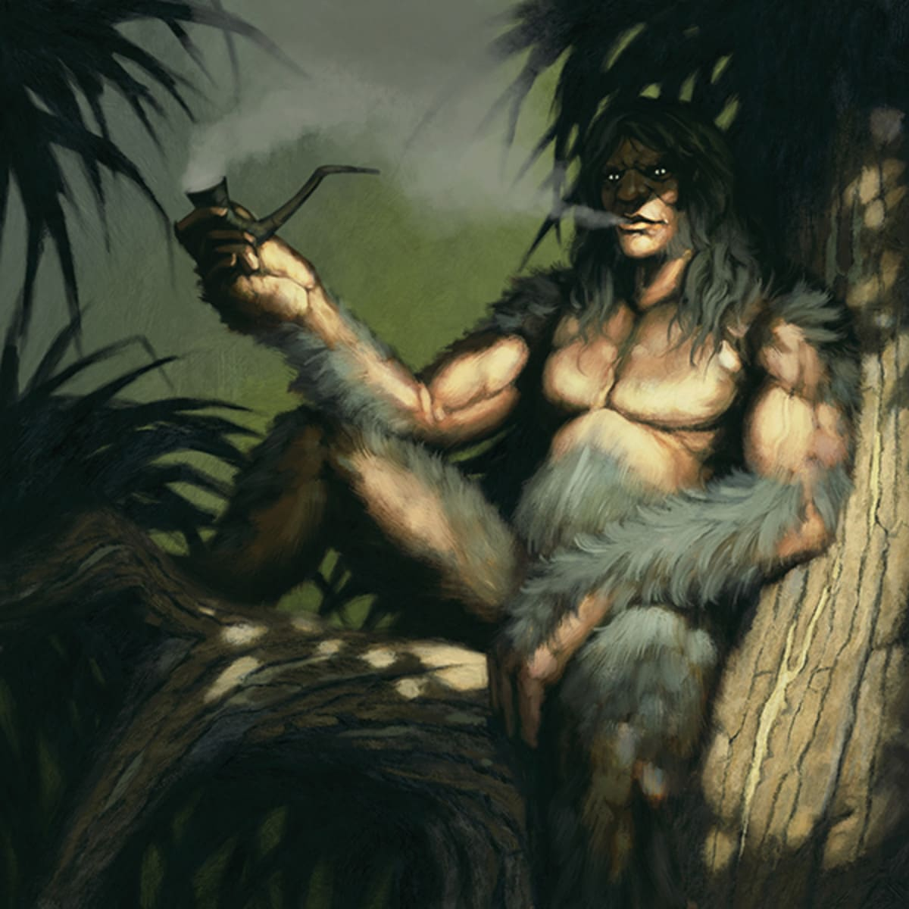

The Kapre is a figure from Philippine folklore, believed to dwell in large, old trees like Balete and Kapok. Stories describe him as towering, smoking cigars, often invisible, sometimes protective, sometimes mischievous. His legend teaches respect for the forest and its unseen powers, reminding humans to live with care in the natural world.
Reflecting on the Story Kapre, this story shows how fear can be transformed into respect and guardianship. Kapre represents not just danger, but protection, patience, and coexistence with nature.
